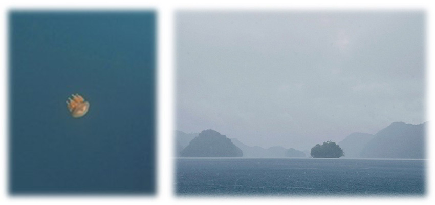

計畫去北海道自駕旅遊已經很久了，考慮到北海道冬天會下雪的情況，路面積雪對於自駕來說是一個大挑戰，路面會因為道路變濕滑不安全，開車時間將會變得充滿不確定性，因此選在夏天去北海道自駕比較安全外，也想去美瑛和富良野看薰衣草花田，北海道的夏天應該是到處都是綠野和花海充滿生意盎然。
自助旅行最重要的就是行前的旅程和交通工具的安排，因為我們選擇開車，因此在當地租車就變得非常重要，可以事先在網路上多比價各廠牌租車的價格，這次我們選擇的是Honda Rent car，從新千歲機場搭接駁車到租車場領車出發不到1個小時，既方便又快速。
 |
第一天
從新千歲機場開始出發往函館，沿路上經過洞爺湖，短暫停下來欣賞這優美的湖景，接著繼續出發往函館，沿路上望著車窗外的美景，這也是自駕的一種樂趣，可以邊開車邊欣賞沿途的風景。
到函館已經是接近傍晚時分，去飯店check in和稍作休息後去大門橫丁吃飯，便直衝有百萬夜景號稱的函館山夜景，很慶幸當天天氣很好，可以看到這麼漂亮的夜景，直呼這次來北海道一切都值得了。
 |
第二天
 |
|  |
一早我們去了函館朝市去吃早餐，北海道最出名的就是當地豐富的農產品和新鮮的海鮮，我們點了生魚片和烤鯖魚套餐，生魚片非常新鮮好吃，烤魚也非常嫩，飯後來個甜點哈密瓜，真的是超級無敵甜，北海道真的是美食天堂！
吃完早餐接著我們去函館當地著名的五稜郭參觀，從最高的五稜郭塔俯瞰，此建築物最有名的就是獨特的五角星造型，在此拍了非常多的照片後就往金森紅磚倉庫出發，時間剛好接近中午，我們就在附近非常有名小丑漢堡用餐，果然用餐時間人非常的多，稍微等待一下，剛好選到靠窗的位置，看著窗外的海景，吃著漢堡就更顯美味了。在此逗留一會兒，接著就往札幌出發了，從函館到札幌開車需要4個小時，到民宿check in已經晚上9點了，也結束今天的行程。
第三天
一早吃完民宿準備的早餐就往余市出發，今天的行程是參觀Nikka威士忌酒廠，此酒廠可是有日本威士忌之父-竹鶴政孝所創立的第一間酒廠，我是看過日劇「阿政與愛莉」和加上喜歡小酌威士忌後才萌發此趟日本威士忌尋根之旅，裡面展示著酒廠創立的歷史外，還有試飲的服務，旁邊的伴手禮店也賣著許多余市威士忌，可惜有年份的山崎威士忌都沒有販賣，Nikka酒廠出廠的山崎18/25年威士忌可是許多威士忌收藏家的夢幻逸品。
 |
參觀威士忌酒廠後接著就去小樽，沿著運河河道悠閒地散步，著名的三角市場裡面販賣著新鮮的海鮮，可是消費不便宜，可以看看就好。沿路兩旁充滿特色的伴手禮店家，除了知名的六花亭/LeTAO/北果樓，還有一堆玻璃手工藝品店可以購買，充滿懷舊的古建築物和蒸汽鐘，小樽充滿著日式寧靜的街道，整個下午都在此流連忘返。
晚餐我們又回到札幌，在這幾天的北海道旅遊中，有兩天的住宿是找日本當地的民宿，很開心民宿的主人非常的熱情，可惜日文不夠好，只能用簡單的日文跟奶奶溝通，她推薦我們去當地的迴轉壽司店トリトンTORITON，果然迴轉壽司新鮮美味CP值超高，不過此迴轉壽司店連當地人都愛，去吃前需要耐心等待排隊叫號，吃完後也去了狸小路逛逛shopping，去日本怎麼能不血拚空手而回呢？買完了想要的伴手禮和藥妝才心滿意足的回民宿休息。
第四天
一早我們就跟民宿奶奶告別，這兩天和奶奶用簡單的日文聊天，知道目前民宿只有她一人在管理加上一隻可愛親人的貓，離開時奶奶站在門口送我們離開，竟然有點依依不捨。我們短暫的前往北海道神宮參拜和去了北海道大學，學道旁的銀杏樹是夏天鮮綠的葉子，可惜不是秋天來，無法欣賞到變得鮮黃和銀杏葉掉滿地的風景。到達旭川後已經是傍晚，我們去了當地很有名的大黑屋成吉思汗烤羊肉，沒想到提早去店裡，店門前還是已經大排長龍，抽了號碼牌便站在門口等待叫號，排隊的人潮中不乏像我們這樣想來嘗鮮的觀光客，巧遇也是來自台灣的一家人，也是來北海道旅遊，就聊了起來。
等待的時間很快就過了，進店裡迎面就聞到撲鼻的烤肉香氣，只能說等待是值得的，店家選用的羔羊羊肉真的超級無敵嫩又沒有羊肉的騷味，真的非常的好吃，大快朵頤了一番才心滿意足地回飯店休息，結束今天的行程。
第五天
接著我們前往旭川/美瑛/富良野，沿途的花海和空曠的農田讓我們忘記了長途開車勞累，去了青池觀賞了碧綠的湖泊，吃了青綠色的冰淇淋。再往富良野的途中已經接近中午，我們隨便找了最local的食堂便進去，建議去這種當地的食堂還要會一點日文，因為菜單並沒有英文也沒有圖片，點餐需要跟店員用日文點餐，當餐點上來時也是極度美味，這間山香食堂已經列入口袋名單。吃完午餐後繼續前往富良野，可惜當天氣候不好下著大雨，薰衣草的花期也到了尾聲，但是我們也品嘗了薰衣草和哈密瓜，稍解看不到薰衣草花田的苦悶。
最後一晚的晚餐我們到旭川，也是當地有名的元祖豬肉蓋飯，當作這趟旅行的完美ending ，店面前也是大排長龍，幸運的是我們剛好有排到，再晚店家就賣完吃不到了！上面的烤肉有炭火的香氣加上刷上有果香和甜味的烤肉醬，配上鬆軟的米飯真的是無敵好吃，果然北海道真的是美食的天堂。
第六天
最後一天一早吃完民宿準備的早餐，便收拾好行李準備回新千歲機場還車，這次六天五夜的自駕行程覺得還是不夠深度認識北海道，畢竟北海道幅員遼闊，下次來北海道時想要秋天來，想要看鮮黃的銀杏和鮮紅的楓葉，期待下次的北海道之旅。